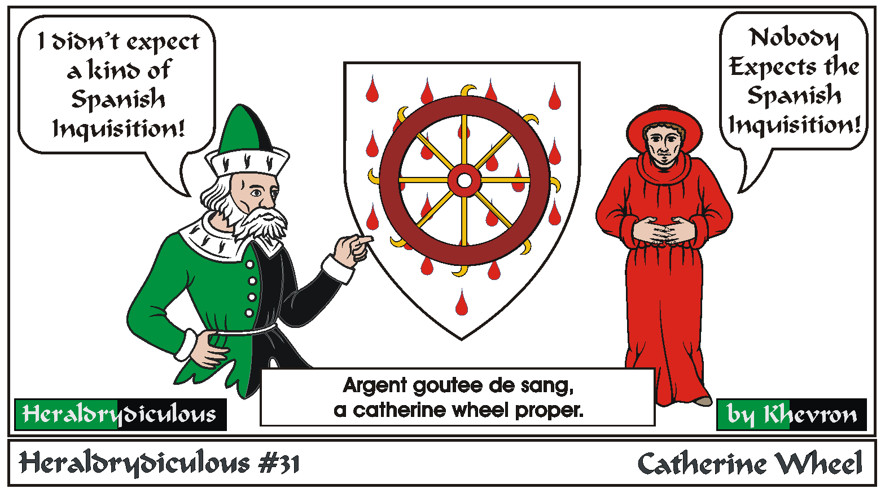

A Catherine Wheel (a wheel with small daggers sticking out) is an instrument of torture, and the drops are gouts de sang (i.e. blood).
Saint Catherine reputedly destroyed the torture wheel with a touch before the romans beheaded her.
Idea by Grimr.
Back to Khevron's Heraldry Page